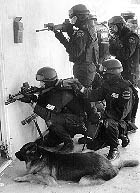

Forums galactiques > Assemblée Galactique : diplomatie officielle > Origine...
Pages : 1
| baron d' Epinay Respect diplomatique : 28  04/12 ETU 16:59 | Score : 9 Détails Le baron entra dans l’Assemblée entouré de quatre de ses hommes. Il boitait et deux des soldats le retenait pour éviter qu’il ne tombe. La petite troupe s’avança ainsi jusqu'à l’estrade. Alors, les soldats lâchèrent le baron qui tomba a genoux. Son visage était tordu par la douleur.
Durant quatre ou cinq minutes, les commandants de l’assemblée regardèrent sans comprendre ce spéctacle terrifiant. Puis on fit venir des médecins mais les soldats leurs tirer dessus jusqu'à ce qu’il s’en aille. Puis les yeux du baron s’injectèrent, il devint successivement pâle, blanc et livide. Il cria, ou plutôt il hurla de douleur. Alors que les commandants regardaient, impuissants cette scène. Certains pleuraient déjà, d’autre entonnait l’hymne de la baronnie : « God Save the baron ! » Alors le hurlement cessa. Tous les commandants levèrent la tête et virent un cadavre livide et froid étendu sur le sol. On entendait plus que les cris de détresse et de douleur, et les rugissements de rage, des amis, des connaissances, de tous les commandants en faite. Ce n’est qu’a ce moment que les médecins purent s’approcher pour examiner le défunt. Un des médecins s’empara du micro et dit : « Monsieur d’Epinay… Est… Il est… Il est mort. » Tout le monde le savait plus ou moins mais la nouvelle frappa tout de même toutes les personnes qui se trouvait là, qui avait vu cette mort horrible. Les cris de tristesse allaient se changer en cri de douleur lorsqu’une voix forte et grave retentit dans toute l’Assemblée : « Un mort ? Qui est mort ? Il n’y a pas de mort ici ! Il n’y a que la vie ! » On cherchait partout l’origine de cette puissante voie. Puis au bout de quelques minutes tous les yeux se fixèrent vers le mort. Non… Ce n’était pas possible… Les médecins étaient unanimes et tout le monde l’avait vu mourir… Ce n’était pas… Alors une petite boule blanche sortit de la bouche du défunt. Un soldat sortit en courant et revint quelque secondes après avec une grande coupe, une énorme coupe en granit. La boule se posa dans le réceptacle et une puissante lumière qui éblouit tous les commandants. Lorsqu’ils retrouvèrent la vue ils put voir un magnifique feu bleu qui brûlait dans cette coupe ce qui offrait un spectacle grandiose. On pouvait remarquer que la coupe était placée au centre de l’assemblée et par conséquent était au centre d’Origine. Alors les plus vifs d’esprit firent le rapprochement : Le centre… Le cœur… La flamme… La vie… Le sauveur… Le messie… La flamme… La flamme… L’âme… Origine… Le cœur… En effet ce n’était pas le démon de la mort qui avait frappé le baron aujourd’hui, mais l’ange de la vie qui lui avait insufflé son aire. Et si le pauvre jeune homme avait été réduit à rester une flamme bleutée toute le restant de ses jours, ce n’était que pour mieux remplir sa mission. La plus importante et la plus lourde des missions : Sauver Origine , devenir son cœur, devenir sa vie, et si la flamme s’éteignait, Origine s’éteindrait avec elle et disparaîtrait… A jamais… | ||
| Rudrig de Sul'Shara Respect diplomatique : 239  04/12 ETU 20:51 | Score : 3 Détails En passant par là, Rudrig aperçut le fameux Graal qui pulsait de la vie même d’Origine.
Joli vase… Il s’en alla ensuite avec un petit baillement. | ||
| cortana II Respect diplomatique : 123  05/12 ETU 12:08 | Score : 2 Détails La commandantes cortana ayant assiste a la scene, demanda a voie haute:
"Ca se vend cher ce truc?" Apres que nombres de commandants luent regardes,elle partie en disant: "Je vais me chercher des frites tien, au diable ma ligne!" | ||
| Tyrian Respect diplomatique : 1334  05/12 ETU 12:47  | Score : 0 Détails Le commandant Tyrian, entendant des murmures, pris de curiosité, vint aux nouvelles. Voyant le spectacle, il s'exclama.
Mais, qui a osé peindre mon cochonet en blanc? Puis tout bas, ajouta pitain con | ||
| Swat Respect diplomatique : 10  05/12 ETU 17:06 | Score : 0 Détails " Commandants, au risque de vous paraitre rabat joie, je me permet de vous demander un peu de respect face à cet évenement.
Vous l'ignorez, c'est votre problème. Mais laissez l'assemblée contempler se spectacle à la fois terrifiant et majesteux" | ||
| William Respect diplomatique : 772  05/12 ETU 17:44 | Score : 0 Détails Paix à sa lueur. Qu'elle repose indéfiniement dans ce vase et que, telle une flamme éternelle, elle brille à tout jamais, illuminant Origine de ses rayons bleutés. C'est dans la lumière la plus vive que les pires ombres se dévoilent.
| ||
| Tyrian Respect diplomatique : 1334 05/12 ETU 19:14 | Score : 1 Détails Soit , soit mon cher Swat !
L'affaire, il est vrai, est des plus sérieuses. J'ai juste cru reconnaître mon cochonnet ! non, ce n'est pas le petit du cochon. Sachez qu'il m'est très cher. En effet, il fut taillé dans le noeud d'un de mes ancêtres et fut égaré lors de l'un de mes nombreux démenagements. J'ai juste cru le reconnaître ! Si quelqu'un venait à le trouver, j'offre une forte prime | ||
| baron d' Epinay Respect diplomatique : 28 05/12 ETU 20:21 | Score : 2 Détails La flamme brillait de mille feu sa lumiere éblouissait les commandants les plus proches.
La voix résonna une nouvelle foi dans l'Assemblée, et une nouvelle fois elle terrifia de nombreux commandant Commandants, je passerai outre les insultes que l'on m'a fait (je dirai juste que vous avez perdu une occasion de vous taire). Cependant, il me semble que ce n'est pas un sujet qui devrai me procurer trop d'ennuis. L'heure est grave commandant, Origine sombre et aucune décisions n'est prise alors qu'Origine sombre de plus en plus jours aprés jour. Général Straken vous êtes le président légitime (hum hum) d'Origine, prenez une décisions rapide général ...trés rapide... | ||
| Olga Respect diplomatique : 25  06/12 ETU 16:35 | Score : 3 Détails La reine Olga, regardait la scène avec attention. Ou plutôt, elle regardait son chat avec attention, qui regardait la scène avec attention.
Heinrich s'avanca vers le baron... vers la coupe d'Epinay, dont le seul nom aurait laissé à penser qu'une course de bateaux à voile se déroulait en ce moment même à l'assemblée. "Monsieur... Enfin... Honorable objet brillant, Sa Charismatique Personne la Reine Olga souhaite obtenir quelques renseignements sur la manière dont vous comptez "sauver" Origine. En particulier, et sauf votre respect, le fait de dire "Je dois sauver Origine, donc, faites quelque chose, Général Straken, vite" est en soi, selon Son Omniscience, un assez mauvais début pour le discours d'un héros libérateur ou pour quelque personnalité que vous incarnez à présent. Elle sait ne pas perdre une occasion de se taire, étant donné qu'elle se tait. Elle désire être informée plus précisément de la manière dont vous désirez agir. Pouvez-vous éclairer Sa Magnificience?" | ||
| baron d' Epinay Respect diplomatique : 28 06/12 ETU 20:13 | Score : 0 Détails En faite, madame, je demande a Straken parce que je n'es pas la puissance d'agir pour le moment et donc je pense que demandé au président n'est pas, en soi, une mauvaide idée n'es-ce pas?
En ce qui concerne le reste vous n'êtes pas obligé de m'appelé manificence mais "monsieur" conviendra trés bien. |
Pages : 1
Forums galactiques > Assemblée Galactique : diplomatie officielle > Origine...